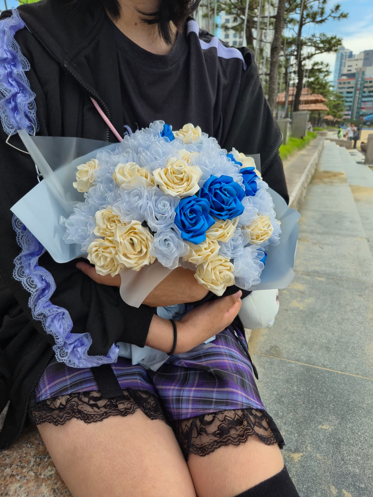

1. Day 1: 2026. 04. 16
우리 이야기의 시작점

우리의 시작점, 그 사진.
너와 사귀기 시작했을 때, 이게 진짜인가? 하고 실감이 없었지만
이후 진짜라 느끼고 시간이 지날수록 너의 사랑을 느낄 수 있었어.
이 캡쳐 사진은 그 이야기의 시작점이야.
이후 진짜라 느끼고 시간이 지날수록 너의 사랑을 느낄 수 있었어.
이 캡쳐 사진은 그 이야기의 시작점이야.
2. Day 51: 2026. 06. 06
처음 함께 본 바다

수평선이 보이는 바다, 너가 보던 풍경. 드디어 같이 봤어.
너가 평소에 자주 오던 바다,
나와 함께 보자한 바다를 드디어 함께 보았어.
이때의 느낌은 잊지 못할거야.
나와 함께 보자한 바다를 드디어 함께 보았어.
이때의 느낌은 잊지 못할거야.
3. Day 51: 2026. 06. 06
너에게 받은 꽃다발

너에게 받은 77송이의 꽃다발.
이걸 77송이를 하나하나 만들어서 꽃다발로 줄줄은 몰랐었지.
알고나선 진짜로 하려고 싶었지.
근데 넌 진짜로 만들어 가져왔지.
그때의 느낌은 아직도 기억해.
그 큰 꽃다발을 들고 나를 찾던 너를.
알고나선 진짜로 하려고 싶었지.
근데 넌 진짜로 만들어 가져왔지.
그때의 느낌은 아직도 기억해.
그 큰 꽃다발을 들고 나를 찾던 너를.
4. Day 51: 2026. 06. 06
너와 함께 찍은 네컷 (사진)

6월 6일, 이 날의 추억을 네컷으로 남긴 그 사진 중 일부.
맨날 너의 사진을 네컷으로만 받다가,
너와 함께한 사진을 찍을 수 있어서 좋았어.
앞으로도 더 많은 추억을 밤하늘에 있는 별들의 수만큼 만들 수 있기를.
너와 함께한 사진을 찍을 수 있어서 좋았어.
앞으로도 더 많은 추억을 밤하늘에 있는 별들의 수만큼 만들 수 있기를.
5. Day 79: 2026. 07. 04
너와 함께 찍은 꽁냥 네컷 (사진)

7월 4일, 이 날의 추억을 네컷으로 남긴 그 사진 중 일부.
맨날 너의 사진을 네컷으로만 받다가,
너와 함께한 사진을 찍을 수 있어서 좋았어.
앞으로도 더 많은 추억을 밤하늘에 있는 별들의 수만큼 만들 수 있기를.
너와 함께한 사진을 찍을 수 있어서 좋았어.
앞으로도 더 많은 추억을 밤하늘에 있는 별들의 수만큼 만들 수 있기를.
6. Day 101: 2026. 07. 25
언제나 우리가 함께이기를
데이트 이후 삽입 예정
어느새 다가온 세자리 숫자.
정말 신기한 기분이야. 연애를 할지도 몰랐는데,
사귄 일자가 세자리가 넘었다니.
그러니 이 일자가 네자리,
다섯자리가 넘어갈 때 까지.
앞으로도 언제나 곁에 있어줘.
사귄 일자가 세자리가 넘었다니.
그러니 이 일자가 네자리,
다섯자리가 넘어갈 때 까지.
앞으로도 언제나 곁에 있어줘.
🔒 숨겨진 별빛 기록
우리의 이야기가 시작된 날짜 4자리를 입력해줘.
To. 하은
이 웹사이트는 너를 생각하며 한 땀 한 땀 만든 우리의 공간이야.
이 웹사이트의 배경처럼, 반짝반짝 빛나는 별이 되어 밤하늘을 밝힐 수 있기를.
언제나 하늘에 있는 밤하늘의 별처럼 나 또한 언제나 너의 곁에 있을게.
앞으로도 하늘에 있는 별들의 수만큼, 수많은 추억을 만들자. 사랑해.
- by. 아시 -